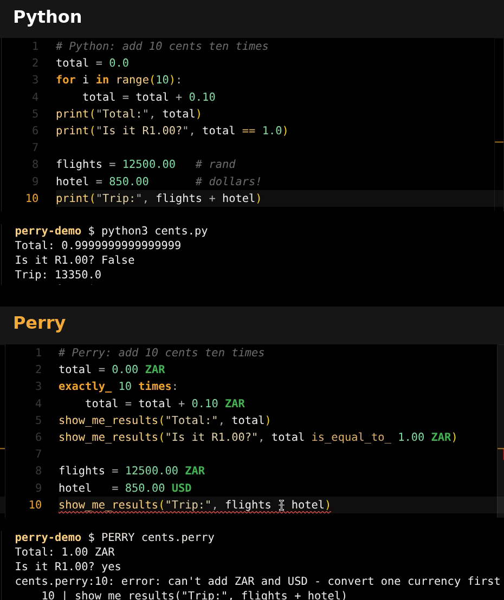
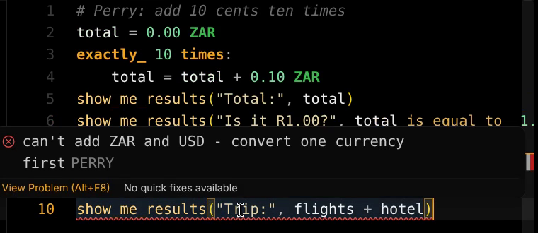
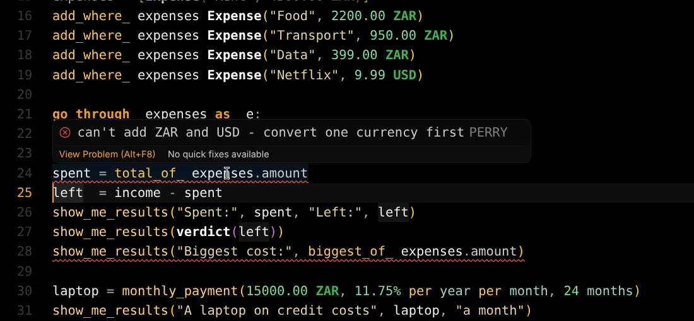
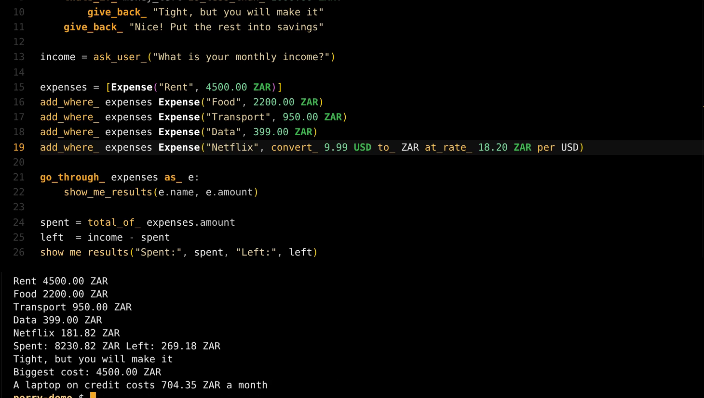

A programming language that gets money right
Perry is a new language for money and finance. It counts to the exact cent, knows that rand and dollars are different things, and finds money mistakes before a program ever runs.
Ask Python to add ten cents ten times and it will tell you the answer is 0.9999999999999999. Ask it whether that equals one rand, and it will say no. Then ask it to add a R12 500 flight to an $850 hotel, and it will happily answer 13350.0, a number that is neither rand nor dollars and is wrong in both.
None of this is a bug in Python. It is how almost every popular language handles numbers: as binary floating point, a format designed for science and graphics, not for money. A tenth cannot be written exactly in binary, just as a third cannot be written exactly in decimal. And to the computer, an amount is just a number. It has no idea what currency it is in.
Financial software works around this with libraries, conventions and careful testing. Perry takes a different approach: it builds the rules of money into the language itself.
Exact money, every time
Perry has no floating point at all. Every number is an exact decimal, with up to 18 digits before the point and 12 after, stored as a 128-bit integer. Money is always rounded to the right number of places for its currency: two for rand and dollars, none for Japanese yen, three for Kuwaiti dinar.
Here is the same program in both languages:

| Python | Perry | |
|---|---|---|
| Add 10 cents ten times | 0.9999999999999999 | 1.00 ZAR |
| Is that R1.00? | False | yes |
| R12 500 + $850 | 13350.0, no warning | Stops: can't add ZAR and USD - convert one currency first |
When you do need to mix currencies, you say so, and the exchange rate becomes part of the record:
netflix = convert_ 9.99 USD to_ ZAR at_rate_ 18.20 ZAR per USDInterest rates work the same way. A rate always carries its period, 11.75% per year, and Perry will not let a yearly rate slip into a monthly calculation. You convert it explicitly with rate per month, and Perry does the conversion exactly.
Code that reads like English
Perry was designed so that someone who knows finance but not programming can read a Perry program and check that it says the right thing. Its keywords are English phrases, and they all end with an underscore so they never clash with your own names.
salary = 25000.00 ZAR
rent = 7800.00 ZAR
never_changes_ VAT = 15%
check_if_ rent is_greater_than_ 40% of salary:
show_me_results("Rent is too high!")
thats_if_ rent is_similar_to_ 30% of salary within_ 500.00 ZAR:
show_me_results("Rent is just right")
since_then_:
show_me_results("Rent is affordable")
shares = split 100.00 ZAR into 3
show_me_results("VAT on a R999 phone:", vat_on_ 999.00 ZAR)
savings = 20% of (salary - rent)
because_is_ savingsRent is just right
VAT on a R999 phone: 149.85 ZAR
savings is 3440.00 ZAR
because savings = 20% of (salary - rent)
= 20% of (25000.00 ZAR - 7800.00 ZAR)
salary is 25000.00 ZAR (given)
rent is 7800.00 ZAR (given)Two details are worth noticing. split 100.00 ZAR into 3 gives R33.34, R33.33 and R33.33, which always add back up to exactly R100; no cent is ever lost or invented. And because_is_ explains where an answer came from, step by step, which is exactly what an auditor, a lecturer or a sceptical client wants to see.
Catching mistakes before they cost money
Refusing to add rand to dollars is useful, but only if the program actually reaches that line. Many money bugs hide in code that rarely runs: a December bonus, a foreign-currency branch, an error path. Testing can easily miss them.
So Perry comes with a checker. PERRY --check reads a program without running it and follows every path through it, including every branch of every check_if_ and every function, whether or not a test would reach it:
define_ year_end(balance, is_december):
check_if_ is_december:
give_back_ balance + 250.00 USD # the bug
give_back_ balance
show_me_results(year_end(10000.00 ZAR, no_))Run this and it prints 10000.00 ZAR without complaint, because it is not December. The checker finds the bug anyway:
year_end.perry:3: error: can't add ZAR and USD - convert one currency firstIn Visual Studio Code, the check runs each time you save, and the mistake is underlined in red before anything runs:

The checker only speaks when it is certain. If it says there is a money mistake, there is one.
That design choice matters. A tool that cries wolf gets switched off. Perry's checker reports only mistakes it can prove would happen if that line ran: mixed currencies, money plus a plain number, a yearly rate used as a monthly one, an exchange rate for the wrong pair of currencies, a record field of the wrong type. When it cannot be sure, for example with figures read from a CSV file at run time, it stays quiet and leaves the check to Perry's run-time rules.
These are preliminary results from our own tests, and every number can be reproduced with the scripts in the research folder. The next step is a study with programs written by university students, whose mistakes are a far better test than ones we planted ourselves.
Building a real app
To show what this looks like in practice, the demo builds a student budget planner in about thirty lines. It uses a blueprint_ for expenses, asks the user for their income, totals the spending, gives a verdict, and works out the monthly cost of a laptop bought on credit at 11.75% a year.
blueprint_ Expense:
name: text
amount: money
income = ask_user_("What is your monthly income?") as_ ZAR
expenses = [Expense("Rent", 4500.00 ZAR)]
add_where_ expenses Expense("Food", 2200.00 ZAR)
add_where_ expenses Expense("Netflix", 9.99 USD) # oops
spent = total_of_ expenses.amountThen, the kind of change people make every day: a Netflix subscription is added, billed in dollars. On save, Perry flags the line where dollars would be added to a rand budget:

One change fixes it: convert the dollars to rand at a stated rate. Save again, the warning disappears, and the app runs with every cent accounted for.

More than arithmetic
Perry 0.9.0 is aimed at students and lecturers in accounting, finance, actuarial science and engineering economics, as well as anyone who writes money code. Alongside exact arithmetic it includes:
- Loans and interest: monthly payments, full amortisation schedules, simple and compound interest, future and present value.
- Investment appraisal: NPV, IRR, payback and discounted payback.
- Depreciation, annuities and bonds: straight-line, reducing balance and sum-of-years; ordinary, due, deferred and perpetual annuities; bond prices and yields.
- Statistics, worked out as exact fractions: averages, medians, variance, standard deviation, correlation and regression.
- Actuarial maths: life tables, life expectancy, life annuities and insurance.
- Real data: bank statements from CSV files, filters, sorting, grouping and duplicate detection.
- Bookkeeping: journal entries that must balance before they are recorded, and a trial balance.
- South African dates: business-day arithmetic that skips public holidays.
Try it
Perry is a single program written in plain C, with no dependencies. On Linux, macOS or Windows (through WSL):
git clone https://github.com/mzwesh-1/perry.git
cd perry
make
./PERRY examples/showcase/english.perry
./PERRY --check examples/showcase/cents.perryThe README has instructions for Windows without WSL, and ready-built programs for every platform are produced automatically on each update.
Why it was built
Perry started from a simple observation: the people who understand money best are often not programmers, and the programmers who write financial software are not always thinking about currencies, rounding and rates. Mistakes in the gap between them are quiet and expensive. Perry closes that gap by making money a first-class idea in the language, by making programs readable enough for a finance expert to check, and by having the computer itself look for the mistakes that matter.
Perry is free and open source under the MIT licence. Bug reports, ideas and contributions are welcome on GitHub.